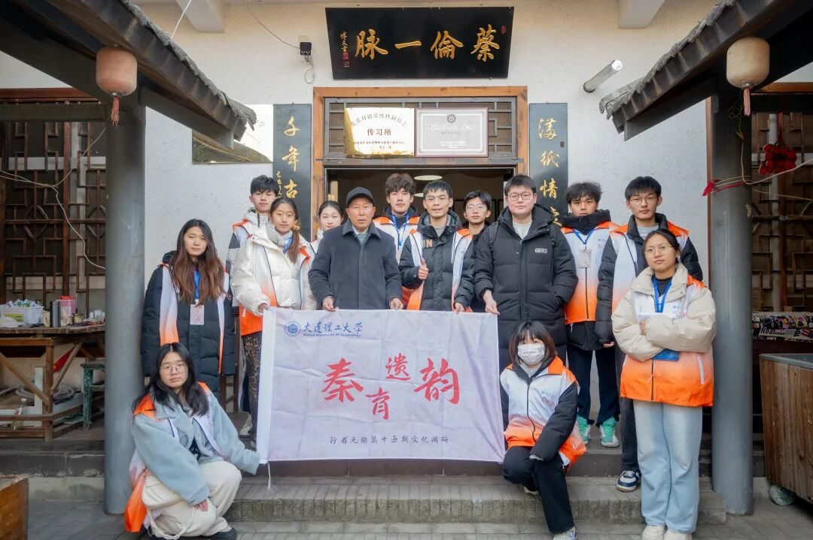
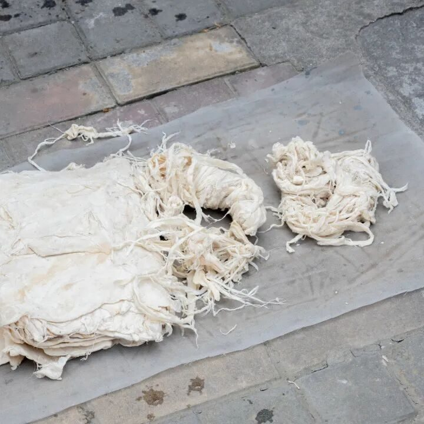
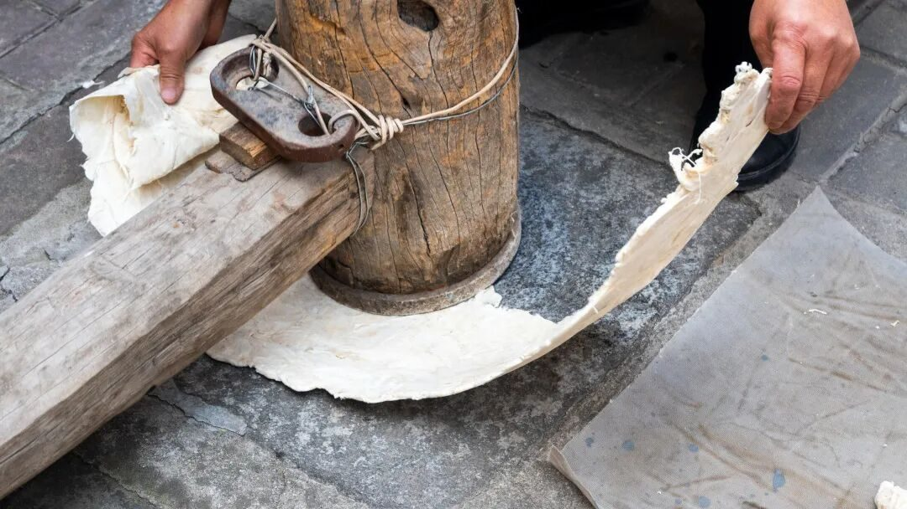
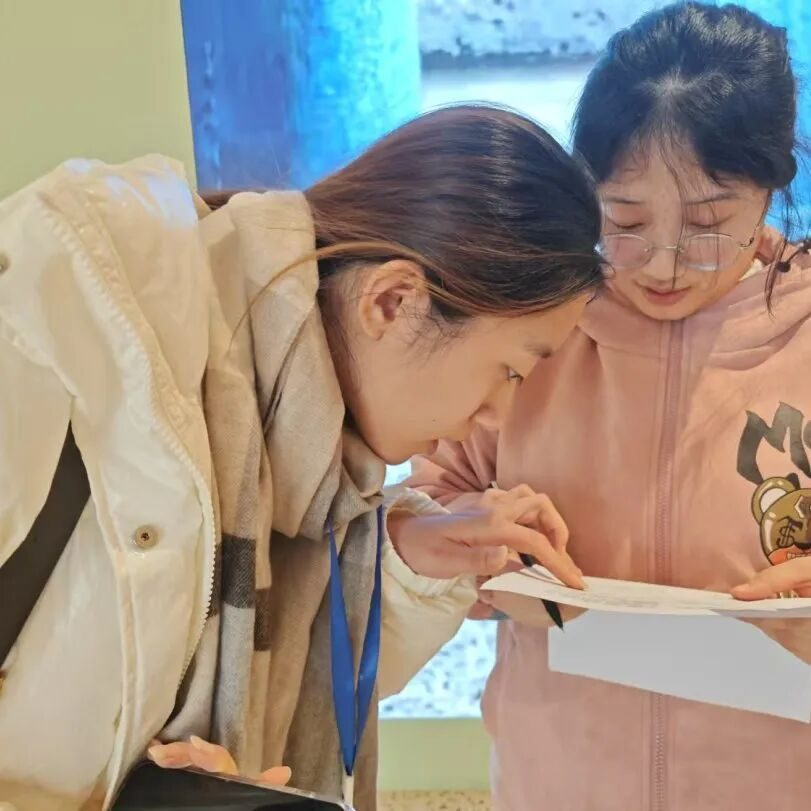

【行者无疆∙秦育遗韵】于纸浆间悟传承，自麻缕处继文明


非遗造纸，传承古艺

破晓时分，行者们背上行囊，意气风发地沿着蜿蜒小径进发，怀揣着敬仰与期待，终于见到了德艺双馨的马松胜老师。马老师引领大家开启非遗造纸的奇妙之旅。
满纸情怀
千年古法


蔡伦一脉
踏碓声声，似在诉说岁月的沧桑；切麻利落，展现先辈的果敢；捞纸沉稳，尽显匠人的巧思。每一道工序，都承载着千年的智慧传承。马老师讲解绘声绘色，演示一丝不苟。随后，行者们亲手实践，指尖触碰纸浆，感受传统工艺的温度与魅力。这一刻，他们深刻领悟到非遗文化的珍贵，也在心底种下守护非遗的种子。
关于马胜松老师的专访

在与马松胜老师的深入交流中，我们逐步揭开其造纸术的神秘面纱。52年来，马老师四处求学，不断优化技艺，让造纸术得以满足大众需求。马老师始终坚守传统，采用天然材料造纸，不添加任何化学原料，这也使得马老师制得的纸张保存时间更为长久。当话题转向“非遗+教育”时，马老师谈到当下他专注于传授传统造纸这一非遗文化课程，让更多的人了解非遗造纸，让这门手艺流传于世，就是马老先生毕生的追求。回顾马老师的历程，“择一事终一生”无疑是对马老师最贴切写照。
生命之树，建筑奇观
下午，行者们前往了西安的生命之树建筑。生命之树是一座独特的现代建筑，融合了自然与科技的元素，象征着生命力与永续发展。建筑的外观宛如一棵巨大的树木，雄伟壮丽，给人一种生机勃勃的感觉。参观过程中，行者们不仅欣赏了这座建筑的独特设计，还了解了它背后所蕴含的环保理念与文化寓意，感受到人与自然和谐共生的力量。

生命之树
非遗，是历史长河中熠熠生辉的明珠，凝聚着先辈智慧与岁月记忆。传承非遗，绝非一人之事，而是需要我们携手共进。让我们以敬畏之心、热爱之情，接过守护的接力棒，让非遗在新时代绽放华彩，续写人类文明的辉煌篇章 。
-END-
来源 | 行者无疆实践团
图片 | 樊星烁 梁棋鑫
文字 | 刘宇凯
编辑 | 郑瑞瑄
审核 | 李凌志 杩健辉
责编 | 邹靓靓